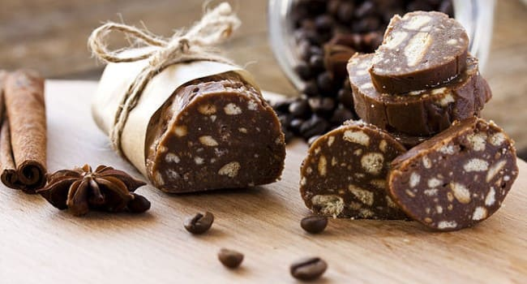
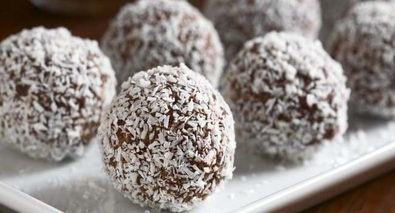
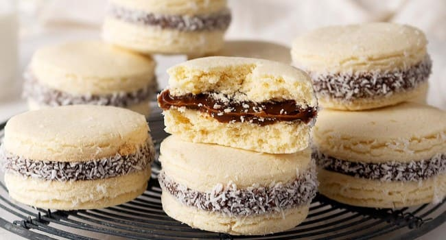
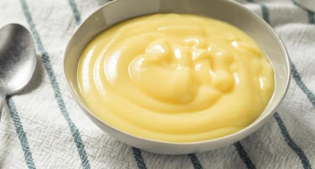

150 Centimetros cúbicos Jugo De Limon (Para la crema)
240 Gramos Azúcar (Para el Merengue italiano)
3 Unidades Clara De Huevo (Para el Merengue italiano
Procedimiento
Procesar o mezclar ligeramente la harina, el azúcar y la manteca fría cortada en cubitos,
hasta formar un arenado. Agregar el huevo y unir la masa sin trabajarla mucho. Envolver en
film y
llevar a la heladera por 30 minutos aproximadamente.
Precalentar el horno a temperatura media (180 °C).
Estirar sobre una mesada enharinada y tapizar un molde para tarta desmontable de 22 cm de
diámetro. Cocinar durante 20 minutos o hasta que comience a dorarse.
Mezclar la Leche Condensada Nestlé con 4 yemas, 150cc de jugo de limón y la ralladura. Unir
bien y verter sobre la masa precocida. Cocinar en horno moderado durante 15 minutos.
Colocar el azúcar en una cacerolita y cubrir con apenas con agua. Cocinar hasta obtener un
merengue bolita blanda.
Unos minutos antes del punto del almíbar, comenzar a batir las claras. Cuando empiecen a
formar picos, añadir gota a gota el almíbar caliente sin dejar de batir hasta que se enfríe.
Decorar con el merengue y gratinar.
Salchichon de chocolate

Ingredientes
90 gr de manteca (a temperatura ambiente)
6 cucharadas de azúcar
6 cucharadas de cacao
7 cucharadas dulce de leche.
200 gr de galletas de vainilla
Procedimiento
Batir la manteca e incorporar de a poco el azúcar. Batir bien para que el azúcar se funda en
el batido.
Agregar el cacao y batir a velocidad mínima hasta que se una (velocidad mínima para que no
salte para todos lados).
Calentar el dulce de leche 30 segundos en microondas e incorporar a la mezcla.
Romper las galletitas dentro de una bolsa, amasando con palote hasta que los pedazos sean
chicos. Agregar a la mezcla y revolver con espátula hasta que la preparación luzca compacta,
no seca. Si luce seca, agregar 2 Cdas de dulce de leche derretido.
Envolver en film y darle forma de rollo. Refrigerar al menos 2 horas, y antes de servir
cortar en rodajas acomodándolas sobre una fuente.
Trufas

Ingredientes
125 g de chocolate en tableta para fundir (negro o con leche, a tu gusto).
1 cucharada (25 g) de mantequilla blanda.
1 cucharadita de azúcar.
2 cucharadas colmadas de coco rallado.
1 sobao, un trozo de bizcocho o una magdalena grande.
1 cucharada de vainilla en polvo o esencia de vainilla.
Más coco rallado para rebozar.
Procedimiento
Trituramos muy bien en la picadora o batidora el bizcocho. Te recomiendo que lo dejes al
aire unas horas antes para que se seque un poquito.
Derretimos el chocolate con la mantequilla al baño María o en el microondas a mitad de
potencia. Mezclamos muy bien con el azúcar, las migas de bizcocho, la vainilla y el coco
rallado.
Dejamos enfriar la mezcla para que se compacte y coja cuerpo.
Con unas cucharitas de postre tomamos porciones de la masa y vamos formando bolitas más o
menos grandes a tu gusto.
Una vez formadas las bolitas se pasan por el coco rallado y se colocan en cápsulas de papel.
Se conservan en frío hasta el momento de consumirlas.
Alfajores de maicena

Ingredientes
Dulce de leche repostero, cantidad necesaria para relleno.
Coco rallado, cantidad necesaria para el relleno.
Harina 100 g.
Polvo de hornear 10 g.
Maicena 400 g.
Azúcar impalpable 150 g.
Manteca 150 g.
Ralladura de limón 1 Unidad.
Yemas 9 Unidades.
Coñac 2 cdas.
Procedimiento
Para comenzar, mezclamos la manteca con el azúcar. Agregamos la ralladura, las yemas y el
coñac.
Luego, tamizamos los ingredientes secos y agregamos a la mezcla anterior. Tomamos la masa
sin amasar mucho. Reservamos en heladera durante al menos 1 hora.
Pasado ese tiempo, estiramos la masa hasta llegar a 7mm de espesor para los alfajores chicos
y de 1 cm para los grandes.
Cortamos la masa con un cortador.
Colocamos en placas enmantecadas.
Llevamos al horno a 180°C durante 10 minutos y luego dejamos enfriar.
Para el armado, unimos con dulce de leche pastelero dos tapas y pasamos los bordes por coco
rallado.
Crema pastelera

Ingredientes
500 ml de leche entera.
4 yemas (de huevos XL).
125 g de azúcar blanco.
50 g de fécula o almidón de maíz.
1 vaina de vainilla.
La piel de un limón (también puede ser una naranja).
Mantequilla (opcional).
Procedimiento
Comenzamos por la vaina de vainilla. Le damos un corte a lo largo, la abrimos y retiramos
con un cuchillo las semillas del interior.
Lavamos el limón y pelamos la piel finamente, sin que lleve parte blanca. En función de
gustos, podéis usar mayor o menor cantidad de piel, ya que el sabor del limón a muchos os
puede resultar cargante.
De la leche, separamos 150 ml. en una taza. Incluso si queréis que quede un poco más
sabrosa. Le podéis añadir un toque de nata, con un chorrito es suficiente. El resto lo
ponemos a calentar en un cazo, a fuego medio. Cuando esté a punto de hervir, pero que no
llegue a hacerlo, retiramos del fuego.
Añadimos la vainilla, la piel del limón y dejamos infusionar unos 30 minutos, con el cazo
tapado. Mientras infusiona la leche vamos a mezclar el almidón o harina de maíz. La
disolvemos en la taza de leche, removiendo bien, para que no queden grumos. Reservamos.
En una cacerola pequeña, añadimos las yemas de los huevos y poco a poco echamos el azúcar.
Removiendo sin parar con unas varillas para que no se pegue. A continuación vertemos la
leche con la harina o almidón de maíz (Maicena). Seguimos removiendo, para que se haga una
mezcla bien homogénea y sin grumos.
Pasado el tiempo de infusionado y reposo (la leche no debe estar muy caliente). Añadimos a
la cacerola la leche infusionada, colándola y de paso separando la vainilla y la piel del
limón. Vamos echando poco a poco y mezclando al mismo tiempo. Ponemos a fuego medio-bajo (4
en escala de 1 a 10) y comenzamos a remover sin parar, poco a poco y sin prisas.
Al principio cuesta un poco pero luego iremos comprobando cómo va cogiendo textura la crema
y va espesando. Seguimos removiendo y de repente, cuando coja la temperatura ideal. Notaréis
como espesa y adquiere esa textura tan suave y reconocible cualquier crema pastelera.
Retiramos del fuego y pasamos la crema a un bol o jarra de cristal, así no cogerá ningún
sabor del recipiente. Dejamos atemperar y luego reservamos tapada con un film transparente,
en la nevera, hasta el momento de su uso.